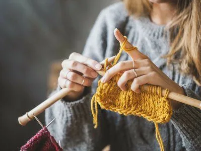
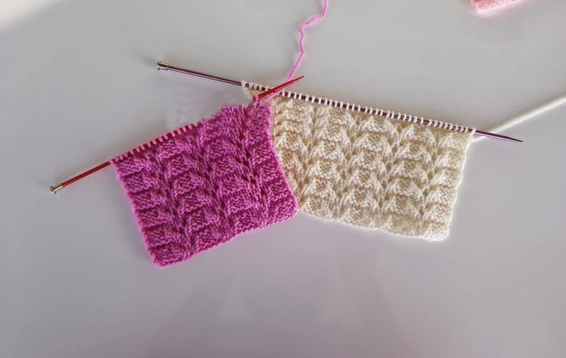

Вязание спицами — это не просто хобби, а способ выразить свою индивидуальность. Наши курсы помогут вам освоить все тонкости этого ремесла, от базовых техник до профессиональных приемов.
Почему стоит научиться вязать спицами?
Вязание спицами – это не просто хобби, это настоящее искусство, которое приносит массу пользы и удовольствия. Это отличный способ расслабиться, проявить свою креативность и создать уникальные вещи своими руками.
Преимущества вязания спицами:
- Снятие стресса и расслабление
- Развитие мелкой моторики и концентрации
- Возможность создавать уникальные вещи для себя и близких
- Экономия бюджета на покупке одежды и аксессуаров
- Самовыражение и творчество
Узнайте больше о истории вязания спицами на Википедии.
Курсы вязания спицами для начинающих
Наши курсы для начинающих помогут вам освоить базовые техники вязания спицами с нуля. Вы научитесь набирать петли, вязать лицевые и изнаночные петли, читать схемы и создавать простые узоры. Освойте простые узоры для начинающих и создавайте свои первые шедевры!
Что вы узнаете на курсе для начинающих:
- Выбор пряжи и спиц
- Набор петель
- Лицевые и изнаночные петли
- Чтение схем вязания
- Простые узоры (платочная вязка, резинка)
Начните с простых узоров спицами - это отличный старт для новичков!
Курсы вязания спицами для опытных
Если вы уже умеете вязать спицами, наши курсы для опытных помогут вам усовершенствовать свои навыки и освоить более сложные техники вязания. Вы научитесь вязать сложные узоры, жаккард, араны, и создавать уникальные вещи с оригинальным дизайном. Попробуйте свои силы в сложных техниках вязания и создайте что-то по-настоящему впечатляющее!

Что вы узнаете на курсе для опытных:
- Сложные узоры (араны, жаккард, косы)
- Вязание по кругу
- Вязание реглана
- Конструирование вязаных изделий
- Работа с выкройками
Узнайте больше о истории вязания спицами на Википедии.
Ищете вдохновение? Посмотрите подборку узоров спицами из журналов.
Узнайте больше о сообществе вязальщиц Ravelry, где можно найти вдохновение и поддержку.